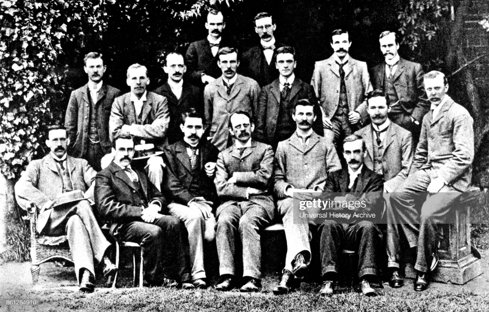
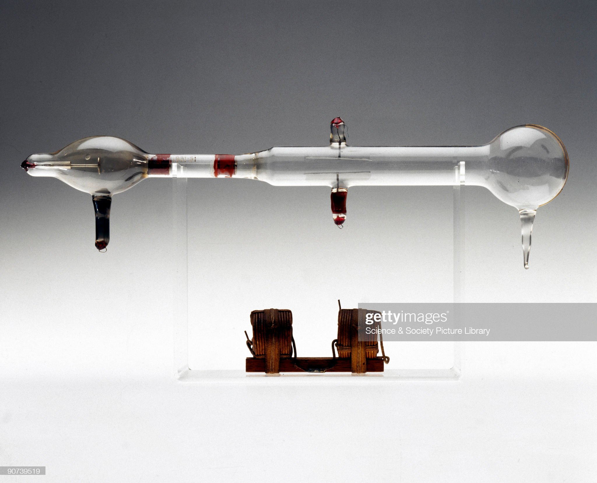
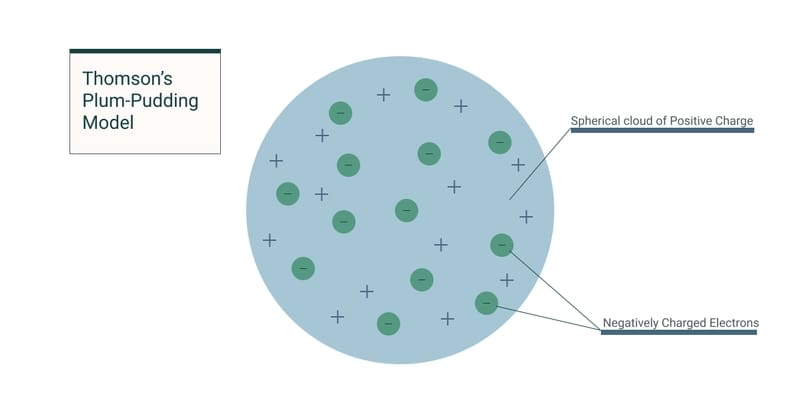

Sir Joseph John Thompson
The Father of the Electron
:max_bytes(150000):strip_icc():format(webp)/sir-joseph-john-thomson-physicist-and-inventor-1900-463924223-58924a5c5f9b5874eee83183.jpg)
Sir Joseph John Thompson in a Lab with his Cathode Ray Expirement
Here's a time line of JJ Thompson life:
- 1856 - Born on 18 December in Cheetham Hill, Manchester, Lancashire, England.
- 1870 - he was admitted to Owens College in Manchester (now University of Manchester) at the unusually young age of 14.
- 1876 - He moved on to Trinity College, Cambridge.
- 1880 - JJ Thomson wins scholarship and becomes second in his class in the graduation exam in mathematics.
- 1884 - A Professor of Physics,JJ Thomson became Cavendish Professor of Experimental Physics at Cambridge.
- 1895 - Thomson began experimental investigations.
- 1897 - A corpuscle discovered!,In 1897, a corpuscle (now known as an electron) was discovered using a cathode ray scope.
- 1904 - Yum plum pudding!,Thomson suggeested a model of the atom as a sphere of positive matter in which electrongs are positioned by electrostatic forces. Thus, the plum pudding model was created!
- 1906 - Nobel Prize, JJ Thomson was awarded the Nobel Prize "in recogniton of the great merits of his theoretical and experimental investigations on the conduction of electricity by gases"..
- 1906 - Postive ions,Thomson begins studying positively charged ions, or positive rays.
- 1908 - Praise for his student, Rutherford, one of JJ Thomson's students, recieves a Nobel Prize in chemistry.
- 1911 - Famous amongst chemists, Niels Bohr leaves England to do postdoctoral research with JJ Thomson.
- 1913 - Influential monographs, Thomson published an influential monograph urging chemists to use mass spectrographs in their analysis.
- 1940 - JJ Thomson Dies.


J. J. Thompson and other Cavendish Laboratory research students.
Thompsons cathode ray tube, 1897.
Joseph John Thompson, English physicist, c 1900.
J Thomson was an English physicist who is credited with discovering the electron and theorising the first model of the atom to use sub atomic particles. He proposed the plum pudding model.